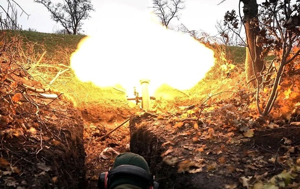

Гаряча точка. Де Росія веде новий наступ
ТЕКСТ: ОЛЕСЯ КРАСНОЛУЦЬКА, 27 січня 2023, 22:00
Фото: пресс-служба Минобороны
Біля Вугледару йдуть важкі бої
Росіяни почали штурмувати Вугледар і ця битва може "визначити подальший хід війни на півдні".
Окрім Бахмута, де кілька місяців тривають одні з найкривавіших боїв, росіяни з новими силами почали намагатися прорвати оборону Вугледару в Донецькій області.
Напередодні російські воїнкори хвалилися тим, що нібито окупанти мають якесь "просування" у напрямку міста, а ватажок "ДНР" Денис Пушилін заявляв, що нібито на підступах до Вугледару армія РФ "зайняла нові позиції".
Українські військові та британська розвідка стверджують, що росіяни, як завжди, перебільшують свої "досягнення", але зазначають, що ворог справді намагається прорвати оборону Вугледара та захопити його.
Штурм морпіхами
Намагаються наступати в районі Вугледара підрозділи мотострілецьких військ та морської піхоти Росії. Окупанти хочуть досягти тут проміжного успіху та захопити місто, щоб прорвати оборону українських військ та рухатися далі, заявив 27 січня речник Східного угруповання військ Сергій Черявий в ефірі національного телемарафону.
"Там ідуть жорстокі бої... Наше завдання - не дати їм зробити прорив, завдати їм максимальних втрат", - повідомив Череватий.
За його інформацією, лише минулої доби ворог здійснив 322 обстріли і сталося 58 бойових зіткнень. Втрати особового складу окупантів склали 109 осіб убитими та 188 - пораненими. Також було знищено чотири танки, три БМП, три гармати та три безпілотники Орлан-10.
"Тому інформація, яка публікується в проросійських Telegram-каналах, значно перебільшена і не відповідає дійсності", - підкреслив Черевий.
Його слова підтримує Міноборони Британії. Іноземна розвідка припускає можливість того, що російські джерела навмисно розповсюджують дезінформацію, намагаючись показати, що російська операція "набирає обертів".
"Бої визначають перебіг війни"
Першим, хто заявив про новий штурм Вугледара, став журналіст Юрій Бутусов. За його словами, місто має ключове значення для російської армії, оскільки його захоплення зможе суттєво покращити стратегічне становище солдатів РФ на Донбасі та надати можливість поглибити оборону.
За словами Бутусова, Вугледар вважається зручним кордоном через географічні особливості. Населений пункт розташований на висоті, тоді як окупанти наступають з низини, що дозволяє завдавати їм чергових поразок.
"Битва за Вугледар визначатиме весь хід подальшої війни на півдні України у 2023-му році", - написав журналіст у Facebook.
Бутусов зазначив, що російське командування визначило метою своєї кампанії на цей рік захоплення всієї території Донбасу або відкидання наших сил від Кримського коридору.
"Для захоплення Вугледару росіяни зосередили з'єднання своїх найкращих військ – бригади морської піхоти та повітрянодесантних військ, запаси боєприпасів", – розповів журналіст.
"М'ясорубка для морячків"
"У Вугледарі ніколи не було просто, як і на будь-якій іншій ділянці по лінії фронту. І в контексті опису нинішньої ситуації слід згадати те, про що багато хто забув, а тому розводять у мережах масову паніку, коли слід зберігати холоднокровність. Спроба захопити Вугледар вже була", - вважає координатор групи Інформаційний опір Олександр Коваленко.
Експерт нагадав, що в перших числах листопада 2022 року російські війська, зібравши більш-менш укомплектовані п'ять БТГр, вже висувалися на штурм Вугледара, який вони поспішили назвати "епічною битвою". Але ця "епічна битва" обмежилася селом Павлівка.
"Відправивши в м'ясорубку важко зібрані п'ять БТГр і зрізавши їхню боєздатність вдвічі і навіть більше, окупанти змогли вийти на околиці Павлівки, при цьому 11 листопада, а потім 20 листопада гучно оголосили про те, що село повністю під їх контролем. Двічі. Але там, де двічі, там і тричі? І ось, з 2 на 3 грудня, артилерія РФ почала обстрілювати Павлівку. Дивно, навіщо обстрілювати село, яке знаходиться під твоїм контролем? Загалом, це невеликий екскурс у недалеке минуле, щоб зрозуміти, що зараз відбувається під Вугледаром зараз", - написав він.
За словами Коваленка, після цього армії РФ знадобилося майже два місяці, щоб відновити втрати своїх підрозділів, щоб знову кинули ці "свіжі сили" на Вугледар. Ось тільки цього разу, як повідомив експерт, російські війська намагаються обходити місто ще й із західного напрямку, а також нинішній склад відрізняється від торішнього кидка військовослужбовців РФ. За його словами, "піхотна компонента превалює, штатна комплектація підрозділів технікою відсутня, згідно з нормативами, але є артилерія".
"Схоже, що 40-ка і 155- ка використовуються командуванням РВВ (російсько-окупаційними військами – ред.) у форматі частково мобілізованих і саме таким чином вони намагатимуться захопити Вугледар", - вважає Коваленко.
У цьому контексті вирішальним чинником, за словами експерта, може стати: по-перше, наявність у ворога достатнього БК до артилерії для підтримки штурмових дій, а по-друге, наявність достатньої кількості артилерії та БК у ЗСУ.
"Буде непросто, але Вугледар знову перемеле морячків. Вірте у ЗСУ", - резюмував експерт.